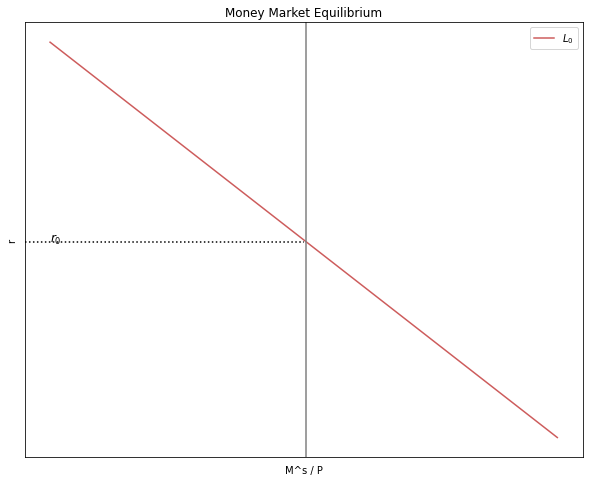
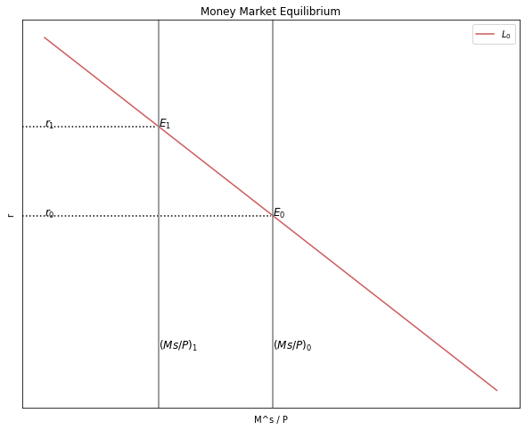
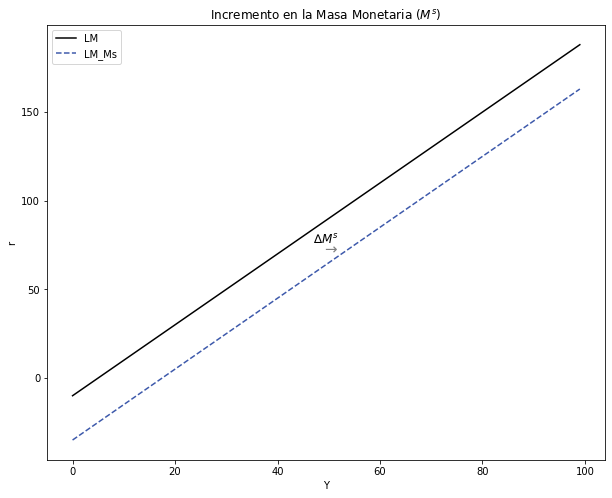

El Mercado Monetario
Contents
import ipympl
%matplotlib widget
%matplotlib inline
import matplotlib.pyplot as plt
import numpy as np
import sympy as sy
import pandas as pd
import numpy as np
import random
import math
import sklearn
import scipy as sp
import networkx
import statsmodels.api as sm
import statsmodels.formula.api as smf
from statsmodels.iolib.summary2 import summary_col
from causalgraphicalmodels import CausalGraphicalModel
import os
os.environ["PATH"] += os.pathsep + 'C:/Program Files/Graphviz/bin/'
from IPython.display import Image
import warnings
warnings.filterwarnings('ignore')
3. El Mercado Monetario¶
Image('tutorial3.png')
Image('tutorial4.png')

3.1. El equilibrio en el Mercado de Dinero¶
El equilibrio en el Mercado de Dinero se deriva del equilibrio entre la Oferta de Dinero \((M^s)\) y Demanda de Dinero \((M^d)\):
\[ M^s = M^d \]
\[ \frac{M^s}{P} = kY - ji \]
Se puede suponer que la inflación esperada es cero, ya que a corto plazo el nivel de precios es fijo y exógeno. Por lo tanto, no habría una gran diferencia entre la tasa de interés nominal \((i)\) y la real \((r)\).
Entonces la ecuación del equilibrio en el mercado monetario es:
\[ \frac{M^s}{P} = kY - jr \]
Y puede graficarse de la siguiente manera:
# Parameters
r_size = 100
k = 0.5
j = 0.2
P = 10
Y = 35
MS_0 = 500
r = np.arange(r_size)
# Necesitamos crear la funcion de demanda
def MD(k, j, P, r, Y):
MD_eq = (k*Y - j*r)
return MD_eq
MD_0 = MD(k, j, P, r, Y)
# Necesitamos crear la oferta de dinero.
MS = MS_0 / P
MS
50.0
# Equilibrio en el mercado de dinero
# Creamos el seteo para la figura
fig, ax1 = plt.subplots(figsize=(10, 8))
# Agregamos titulo t el nombre de las coordenadas
ax1.set(title="Money Market Equilibrium", xlabel=r'M^s / P', ylabel=r'r')
# Ploteamos la demanda de dinero
ax1.plot(MD_0, label= '$L_0$', color = '#CD5C5C')
# Para plotear la oferta de dinero solo necesitamos crear una linea vertical
ax1.axvline(x = MS, ymin= 0, ymax= 1, color = "grey")
# Creamos las lineas puntadas para el equilibrio
ax1.axhline(y=7.5, xmin= 0, xmax= 0.5, linestyle = ":", color = "black")
# Agregamos texto
ax1.text(0, 7.5, "$r_0$", fontsize = 12, color = 'black')
ax1.yaxis.set_major_locator(plt.NullLocator())
ax1.xaxis.set_major_locator(plt.NullLocator())
ax1.legend()
plt.show()

3.1.1. ¿Qué sucede en el Mercado de Dinero si el producto se incrementa?¶
# Parameters con cambio en el nivel del producto
r_size = 100
k = 0.5
j = 0.2
P = 10
Y_1 = 50
MS_0 = 500
r = np.arange(r_size)
# Necesitamos crear la funcion de demanda
def MD(k, j, P, r, Y):
MD_eq = (k*Y - j*r)
return MD_eq
MD_1 = MD(k, j, P, r, Y_1)
# Necesitamos crear la oferta de dinero.
MS = MS_0 / P
MS
# Equilibrio en el mercado de dinero
# Creamos el seteo para la figura
fig, ax1 = plt.subplots(figsize=(10, 8))
# Agregamos titulo t el nombre de las coordenadas
ax1.set(title="Money Market Equilibrium", xlabel=r'M^s / P', ylabel=r'r')
# Ploteamos la demanda de dinero
ax1.plot(MD_0, label= '$L_0$', color = '#CD5C5C')
#ax1.plot(MD_1, label= '$L_0$', color = '#CD5C5C')
# Para plotear la oferta de dinero solo necesitamos crear una linea vertical
ax1.axvline(x = MS, ymin= 0, ymax= 1, color = "grey")
# Creamos las lineas puntadas para el equilibrio
ax1.axhline(y=7.5, xmin= 0, xmax= 0.5, linestyle = ":", color = "black")
# Agregamos texto
ax1.text(0, 7.5, "$r_0$", fontsize = 12, color = 'black')
ax1.text(50, 0, "$(Ms/P)_0$", fontsize = 12, color = 'black')
ax1.text(50, 7.5, "$E_0$", fontsize = 12, color = 'black')
# Nuevas curvas a partir del cambio en el nivel del producto
ax1.plot(MD_1, label= '$L_1$', color = '#4287f5')
ax1.axvline(x = MS, ymin= 0, ymax= 1, color = "grey")
ax1.axhline(y=15, xmin= 0, xmax= 0.5, linestyle = ":", color = "black")
ax1.text(0, 15, "$r_1$", fontsize = 12, color = 'black')
ax1.text(50, 15, "$E_1$", fontsize = 12, color = 'black')
ax1.yaxis.set_major_locator(plt.NullLocator())
ax1.xaxis.set_major_locator(plt.NullLocator())
ax1.legend()
plt.show()
3.1.2. ¿Qué sucede en el Mercado de Dinero si la cantidad de dinero se incrementa?¶
# Parameters con cambio en el nivel del producto
r_size = 100
k = 0.5
j = 0.2
P_1 = 20
Y = 35
MS_0 = 500
r = np.arange(r_size)
# Necesitamos crear la funcion de demanda
def MD(k, j, P, r, Y):
MD_eq = (k*Y - j*r)
return MD_eq
MD_1 = MD(k, j, P_1, r, Y)
# Necesitamos crear la oferta de dinero.
MS_1 = MS_0 / P_1
MS
50.0
# Equilibrio en el mercado de dinero
# Creamos el seteo para la figura
fig, ax1 = plt.subplots(figsize=(10, 8))
# Agregamos titulo t el nombre de las coordenadas
ax1.set(title="Money Market Equilibrium", xlabel=r'M^s / P', ylabel=r'r')
# Ploteamos la demanda de dinero
ax1.plot(MD_0, label= '$L_0$', color = '#CD5C5C')
#ax1.plot(MD_1, label= '$L_0$', color = '#CD5C5C')
# Para plotear la oferta de dinero solo necesitamos crear una linea vertical
ax1.axvline(x = MS, ymin= 0, ymax= 1, color = "grey")
# Creamos las lineas puntadas para el equilibrio
ax1.axhline(y=7.5, xmin= 0, xmax= 0.5, linestyle = ":", color = "black")
# Agregamos texto
ax1.text(0, 7.5, "$r_0$", fontsize = 12, color = 'black')
ax1.text(50, 0, "$(Ms/P)_0$", fontsize = 12, color = 'black')
ax1.text(50, 7.5, "$E_0$", fontsize = 12, color = 'black')
# Nuevas curvas a partir del cambio en el nivel del producto
#ax1.plot(MD_1, label= '$L_1$', color = '#4287f5')
ax1.axvline(x = MS_1, ymin= 0, ymax= 1, color = "grey")
ax1.axhline(y=12.5, xmin= 0, xmax= 0.27, linestyle = ":", color = "black")
ax1.text(0, 12.5, "$r_1$", fontsize = 12, color = 'black')
ax1.text(25, 0, "$(Ms/P)_1$", fontsize = 12, color = 'black')
ax1.text(25, 12.5, "$E_1$", fontsize = 12, color = 'black')
ax1.yaxis.set_major_locator(plt.NullLocator())
ax1.xaxis.set_major_locator(plt.NullLocator())
ax1.legend()
plt.show()

3.2. Derivación de la Curva LM a partir del Equilibrio en el Mercado de Dinero¶
#1----------------------Equilibrio mercado monetario
# Parameters
r_size = 100
k = 0.5
j = 0.2
P = 10
Y = 35
r = np.arange(r_size)
# Ecuación
def Ms_MD(k, j, P, r, Y):
Ms_MD = P*(k*Y - j*r)
return Ms_MD
Ms_MD = Ms_MD(k, j, P, r, Y)
# Nuevos valores de Y
Y1 = 45
def Ms_MD_Y1(k, j, P, r, Y1):
Ms_MD = P*(k*Y1 - j*r)
return Ms_MD
Ms_Y1 = Ms_MD_Y1(k, j, P, r, Y1)
Y2 = 25
def Ms_MD_Y2(k, j, P, r, Y2):
Ms_MD = P*(k*Y2 - j*r)
return Ms_MD
Ms_Y2 = Ms_MD_Y2(k, j, P, r, Y2)
#2----------------------Curva LM
# Parameters
Y_size = 100
k = 0.5
j = 0.2
P = 10
Ms = 30
Y = np.arange(Y_size)
# Ecuación
def i_LM( k, j, Ms, P, Y):
i_LM = (-Ms/P)/j + k/j*Y
return i_LM
i = i_LM( k, j, Ms, P, Y)
# Gráfico de la derivación de la curva LM a partir del equilibrio en el mercado monetario
# Dos gráficos en un solo cuadro
fig, (ax1, ax2) = plt.subplots(1,2, figsize=(20, 8))
#---------------------------------
# Gráfico 1: Equilibrio en el mercado de dinero
ax1.set(title="Money Market Equilibrium", xlabel=r'M^s / P', ylabel=r'r')
ax1.plot(Y, Ms_MD, label= '$L_0$', color = '#CD5C5C')
ax1.plot(Y, Ms_Y1, label= '$L_1$', color = '#CD5C5C')
ax1.plot(Y, Ms_Y2, label= '$L_2$', color = '#CD5C5C')
ax1.axvline(x = 45, ymin= 0, ymax= 1, color = "grey")
ax1.axhline(y=35, xmin= 0, xmax= 1, linestyle = ":", color = "black")
ax1.axhline(y=135, xmin= 0, xmax= 1, linestyle = ":", color = "black")
ax1.axhline(y=85, xmin= 0, xmax= 1, linestyle = ":", color = "black")
ax1.text(47, 139, "C", fontsize = 12, color = 'black')
ax1.text(47, 89, "B", fontsize = 12, color = 'black')
ax1.text(47, 39, "A", fontsize = 12, color = 'black')
ax1.text(0, 139, "$r_2$", fontsize = 12, color = 'black')
ax1.text(0, 89, "$r_1$", fontsize = 12, color = 'black')
ax1.text(0, 39, "$r_0$", fontsize = 12, color = 'black')
ax1.yaxis.set_major_locator(plt.NullLocator())
ax1.xaxis.set_major_locator(plt.NullLocator())
ax1.legend()
#---------------------------------
# Gráfico 2: Curva LM
ax2.set(title="LM SCHEDULE", xlabel=r'Y', ylabel=r'r')
ax2.plot(Y, i, label="LM", color = '#3D59AB')
ax2.axhline(y=160, xmin= 0, xmax= 0.69, linestyle = ":", color = "black")
ax2.axhline(y=118, xmin= 0, xmax= 0.53, linestyle = ":", color = "black")
ax2.axhline(y=76, xmin= 0, xmax= 0.38, linestyle = ":", color = "black")
ax2.text(67, 164, "C", fontsize = 12, color = 'black')
ax2.text(51, 122, "B", fontsize = 12, color = 'black')
ax2.text(35, 80, "A", fontsize = 12, color = 'black')
ax2.text(0, 164, "$r_2$", fontsize = 12, color = 'black')
ax2.text(0, 122, "$r_1$", fontsize = 12, color = 'black')
ax2.text(0, 80, "$r_0$", fontsize = 12, color = 'black')
ax2.text(72.5, -14, "$Y_2$", fontsize = 12, color = 'black')
ax2.text(56, -14, "$Y_1$", fontsize = 12, color = 'black')
ax2.text(39, -14, "$Y_0$", fontsize = 12, color = 'black')
ax2.axvline(x=70, ymin= 0, ymax= 0.69, linestyle = ":", color = "black")
ax2.axvline(x=53, ymin= 0, ymax= 0.53, linestyle = ":", color = "black")
ax2.axvline(x=36, ymin= 0, ymax= 0.38, linestyle = ":", color = "black")
ax2.yaxis.set_major_locator(plt.NullLocator())
ax2.xaxis.set_major_locator(plt.NullLocator())
ax2.legend()
plt.show()
3.3. Curva LM¶
Siguiendo la última ecuación de equilibrio, la curva LM se da en función de la tasa de interés:
\[ r = -\frac{1}{j}\frac{M_o^s}{P_o} + \frac{k}{j}Y \]
# Parameters
Y_size = 100
k = 10
j = 10
Ms = 200
P = 20
Y = np.arange(Y_size)
# Ecuación
def i_LM( k, j, Ms, P, Y):
i_LM = (-Ms/P)/j + k/j*Y
return i_LM
i = i_LM( k, j, Ms, P, Y)
# Gráfico de la curva LM
# Dimensiones del gráfico
y_max = np.max(i)
v = [0, Y_size, 0, y_max]
fig, ax = plt.subplots(figsize=(10, 8))
# Eliminar las cantidades de los ejes
ax.yaxis.set_major_locator(plt.NullLocator())
ax.xaxis.set_major_locator(plt.NullLocator())
# Curvas a graficar
ax.plot(Y, i, label="LM", color = '#3D59AB')
# Título y leyenda
ax.set(title="LM SCHEDULE", xlabel=r'Y', ylabel=r'r')
ax.legend()
plt.show()
3.4. Estática comparativa¶
3.4.1. Política monetaria expansiva: incremento en la Masa Monetaria \((M^s)\)¶
#--------------------------------------------------
# Curva LM ORIGINAL
# Parámetros
Y_size = 100
k = 2
j = 1
Ms = 200
P = 20
Y = np.arange(Y_size)
# Ecuación
def i_LM( k, j, Ms, P, Y):
i_LM = (-Ms/P)/j + k/j*Y
return i_LM
i = i_LM( k, j, Ms, P, Y)
#--------------------------------------------------
# NUEVA curva LM
# Definir SOLO el parámetro cambiado
Ms = 700
# Generar la ecuación con el nuevo parámetro
def i_LM_Ms( k, j, Ms, P, Y):
i_LM = (-Ms/P)/j + k/j*Y
return i_LM
i_Ms = i_LM_Ms( k, j, Ms, P, Y)
# Dimensiones del gráfico
y_max = np.max(i)
v = [0, Y_size, 0, y_max]
fig, ax = plt.subplots(figsize=(10, 8))
# Curvas a graficar
ax.plot(Y, i, label="LM", color = 'black')
ax.plot(Y, i_Ms, label="LM_Ms", color = '#3D59AB', linestyle = 'dashed')
# Texto agregado
plt.text(47, 76, '∆$M^s$', fontsize=12, color='black')
plt.text(49, 70, '→', fontsize=15, color='grey')
# Título y leyenda
ax.set(title = "Incremento en la Masa Monetaria $(M^s)$", xlabel=r'Y', ylabel=r'r')
ax.legend()
plt.show()
